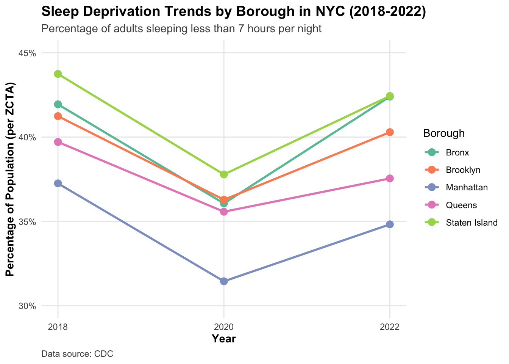

Code
# Load required libraries
library(tidyverse)
library(scales)
library(ggplot2)
# Reshape the data for easier plotting
sleep_data <- read.csv("data_cleaning/sleep_health_final_dataset.csv") |>
summarise(
sleep18_2018 = mean(perc_sleep18),
sleep18_2020 = mean(perc_sleep20),
sleep18_2022 = mean(perc_sleep22)
) |>
pivot_longer(
cols = everything(),
names_to = "measure",
values_to = "percentage"
) |>
mutate(
year = case_when(
str_detect(measure, "2018") ~ 2018,
str_detect(measure, "2020") ~ 2020,
str_detect(measure, "2022") ~ 2022
),
age_group = str_extract(measure, "\\d+") |>
paste0("Age ", str_extract(measure, "\\d+"), "+") # paste0("Age ", _, "+") # or we could just do: paste0("Age ", str_extract(measure, "\\d+"), "+")
)
# Create the plot
sleep_trends_plot <- ggplot(sleep_data, aes(x = year, y = percentage, group = 1)) +
geom_line(linewidth = 1, color = "#2c3e50") +
geom_point(size = 3, color = "#2c3e50") +
scale_y_continuous(
limits = c(30, 45),
labels = function(x) paste0(x, "%"),
breaks = seq(30, 45, by = 5)
) +
scale_x_continuous(breaks = c(2018, 2020, 2022)) +
labs(
title = "Sleep Deprivation Trends in NYC (2018-2022)",
subtitle = "Percentage of adults sleeping less than 7 hours per night",
x = "Year",
y = "Percentage of Population",
caption = "Data source: NYC Health Department"
) +
theme_minimal() +
theme(
plot.title = element_text(face = "bold", size = 14),
plot.subtitle = element_text(color = "gray30"),
axis.title = element_text(face = "bold"),
panel.grid.minor = element_blank(),
plot.caption = element_text(color = "gray30", hjust = 0)
)
# Display the plot
print(sleep_trends_plot)